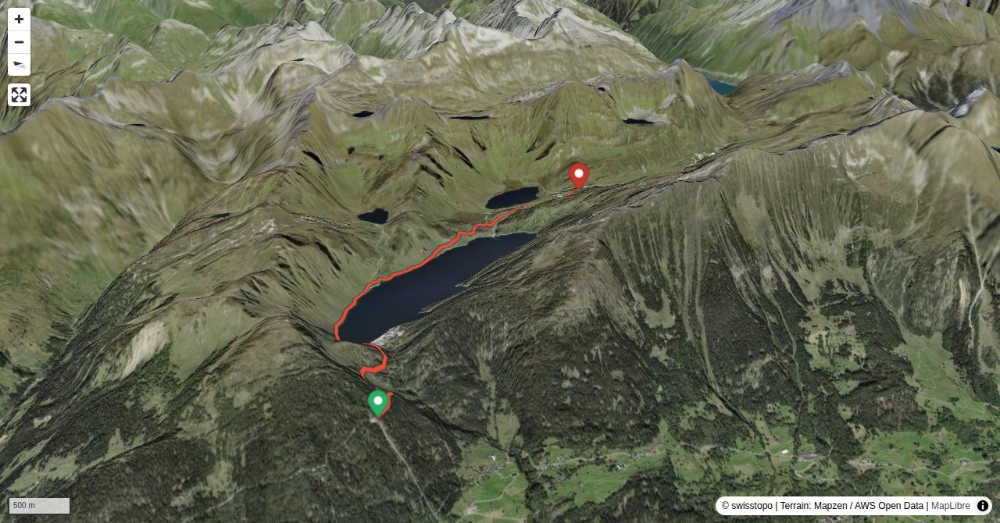

This gentle stroll goes from the summit station of the funicular – with almost 90 per cent maximum inclination it is one of the steepest in the world – on a tarred small road to the dam of Lago Ritom and subsequently along the north shore of the lake to Cadagno di Fuori. From there you hike on a dirt road past Alpe Piora to Capanna Cadagno. Especially on a clear summer week-end there is traffic on the road to the artificial lake (thus for the first 20 minutes). Between the dam and Cadagno di Fuori, however, it should be quieter: uphill the road is closed between 9 a.m. and 5 p.m., downhill between 9 a.m. and noon. The segment is also popular among mountain bikers.
If you depart from the dam (car parking), you save about 20 minutes.
Quick Facts
| Summit elevation | 1983 m |
|---|---|
| Difficulty | SAC T1 Hiking on well-marked paths with no technical difficulty. Guide |
| Trailhead | Piora, Bergstation |
| Region | Southern Alps |
| Canton | Ticino |
| Distance | 5.7 km (out-and-back) |
| Total ascent | ~191 m |
| Elevation range | 1793-1983 m |
| Route sources | SAC Route Portal |
Photos

Planning
i
i
sac_scale (precise T1–T6) with
swissTLM3D Wanderwegart
fallback where OSM is silent (coarser T2/T3 and T4+ buckets).
Coverage: OSM 18.6% · swisstopo 70.2% · unknown 8.5%.Elevations computed from the inlined GPX track (SwissTopo height API).
Loading forecast…
Start: Piora, Bergstation (1793 m)
Route returns to Piora, Bergstation.
Cable car to Piora, Bergstation.
3D Terrain View

Route Details
From Piora
- If you depart from the dam (car parking), you save about 20 minutes.
Source: SAC Route Portal
Field Reference
| Trailhead | Piora, Bergstation | 46.52730, 8.67250 |
|---|---|---|
| Summit | Capanna Cadagno (1983 m) | 46.54654, 8.71967 |
Coordinates are WGS84 decimal degrees (lat, lon). Emergency: 112 (general) or 1414 (Rega air rescue). Page URL: